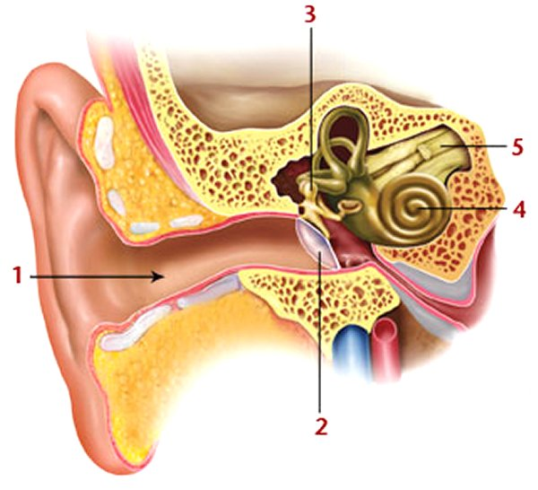
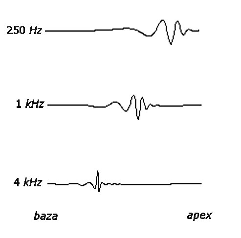
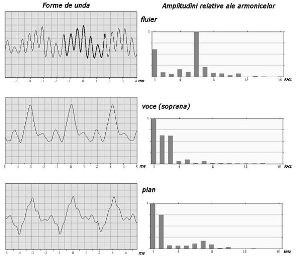

Acustica
D.2. |
|
Perceperea sunetelor |
 Activitatea experimentală 1D2−1
Activitatea experimentală 1D2−1
Investighează corespondenţa dintre frecvenţa undelor sonore şi senzaţiile auditive pe care acestea le generează.
Utilizează acest generator de sunete pentru a controla frecvenţa undelor sonore.
Pasul 1 Desfă sita frontală de protecţie a difuzorului unei boxe şi pune boxa orizontal, cu difuzorul în sus.
Pasul 2 Fixează frecvenţa generatorului la 10 Hz şi observă membrana difuzorului. Atinge uşor membrana. Ce simţi? Auzi vreun
sunet provenit de la membrana difuzorului?
Pasul 3 Măreşte treptat frecvenţa şi ascultă cu atenţie.
Vibraţiile de joasă frecvenţă (sub aproximativ 20 Hz) nu îţi provoacă senzaţii auditive, deşi le poţi simţi tactic şi le poţi vedea.
Începând cu aproximativ 20 Hz, auzi sunete pe care le poţi deosebi. Frecvenţa sunetului este corelată cu senzaţia de înălţime a acestuia:
sunetele cu frecvenţă mai mare sunt mai înalte.
Totodată, vibraţiile de foarte înaltă frevenţă (aproximativ 20 kHz) nu îţi mai produc senzaţii auditive. Această limită superioară diferă mult de la
o persoană la alta şi scade odată cu vârsta.
 Undele sonore cu frecvenţa cuprinsă între aproximativ 20 Hz şi 20 kHz produc senzaţii auditive, de la cele mai grave, până la cele mai acute.
Undele sonore cu frecvenţa cuprinsă între aproximativ 20 Hz şi 20 kHz produc senzaţii auditive, de la cele mai grave, până la cele mai acute.
 Provocarea 1D2−1
Provocarea 1D2−1
Prin ce miracol, oare, frecvenţa udelor sonore provoacă senzaţia de înălţime a sunetului?
Undele sonore se propagă, din aproape în aproape, până în dreptul pavilionului urechii (figura 1D2−1).

Fig. 1D2-1. Structura urechii umane.
Undele sonore sunt transmise prin canalul urechii (1) către membrana timpanului (2), care este pusă în vibraţie.
Un ansamblu de oase minuscule, articulate, (3) transferă vibraţiile către o formaţiune spirală − cohleea (4). Fluidul din interiorul cohleei este
pus în vibraţie şi stimulează mii de celule sensibile la vibraţii.
Vibraţii cu frecvenţe diferite provoacă în interiorul cohleei provoacă în interiorul cohleei unde staţionare, având maximele în diferite zone ale acesteia.
Vibraţiile cu frecvenţe joase produc maxime mai aproape de vârful cohleei, iar vibraţiile cu frecvenţe mai înalte produc maxime mai aproape de baza acesteia
(figura 1D2−2).

Fig. 1D2-2. Vibraţii cu frecvenţe diferite provoacă în cohlee unde staţionare cu maxime localizate în diferite zone ale acesteia.
Astfel, frecvenţe diferite vor stimula grupuri diferite de celule. Aceste celule transformă vibraţiile în semnale neurale (impulsuri electrice), care sunt
transmise către creier prin intermediul nervilor auditivi.
Creierul este cel care interpretează semnalele electrice primite, oferindu−ţi senzaţii auditive diferite pentru unde sonore având frecvenţ diferite.
Activitatea experimentală 1D2−2
Investighează corespondenţa dintre amplitudinea undelor sonore şi senzaţiile auditive pe care acestea le generează. Utilizează
generatorul de sunete pentru a controla amplitudinea undelor sonore.
Pasul 1 Fixează frecvenţa semnalului la 1000 Hz, iar amplitudinea pe prima treaptă. Modifică treptat amplitudinea şi ascultă.
De câte ori trebuie să măreşti amplitudinea pentru a avea o dublare a tăriei percepute a sunetului?
Pasul 2 Fixează din nou amplitudinea pe prima treaptă. Parcurge rapid gama de frecvenţ, de la cea mai joasă la cea mai înaltă.
În care zonă de frecvenţe suntele îţi par a fi mai tari?
Amplitudinea undelor sonore este corelată cu senzaţia de tărie (intensitate) a sunetului: mărind amplitudinea, sunetul îţi pare mai tare.
Relaţia dintre amplitudinea undelor sonore şi tăria sunetului nu este de directă proporţionalitate. În general, simţurile noastre (inclusiv cel auditiv),
funcţionează logaritmic:
Legea Weber−Fehner: Intensitatea senzaţiei creşte cu logaritmul zecimal al intensităţii stimulului.
În cazul sunetelor, tăria creşte cu logaritmul zecimal al intensităţii acustice. La rândul său, intensitatea acustică depinde de pătratul amplitudinii
undelor sonore (pentru că energia unui oscilator armonic depinde de pătratul amplitudinii de oscilaţie).
La aceeaşi amplitudine a undelor sonore, senzaţia de tărie diferă odată cu frecvenţa: tăria maximă este resimţită pentru sunete cu frecvenţe medii
(3 kHz...4 kHz).
Provocarea 1D2−2
Când asculţi o piesă muzicală, poţi recunoaşte instrumentele şi vocile, chiar dacă frecvenţa şi amplitudinea ar fi aceleaşi.
Cum este oare posibil?
Fiecare sursă sonoră generează unde sonore având o anumită compoziţie a armonicelor.
Chiar dacă frecvenţa fundamentală ar fi aceeaşi, ponderile armonicelor sunt caracteristice fiecărei surse în parte (figura 1D2−3).

Fig. 1D2-3. Compoziţia armonicelor generate de diferite surse sonore.
Diferitele componente armonice activează grupe diferite de celule din cohlee, astfel că putem recunoaşte sursele sonore după compoziţia lor armonică.
Compoziţia armonică a unui sunet conferă acestuia o calitate particulară: timbrul (sau "culoarea") sunetului.
Cunoscând compoziţia armonică a unui sunet, acesta poate fi sintetizat din componentele sale armonice − instrumentul este numit sintetizator.
Activitatea experimentală 1D2−3
Investighează sintetizarea sunetelor folosind acest sintetizator. Modifică, după dorinţă, compoziţia armonică. Ascultă modificările
timbrului.